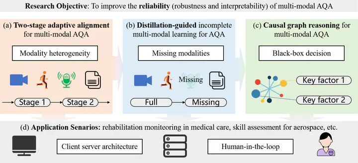

Research Proposal

Relationship of Different Research Problems
Research Proposal on Multi-Modal Action Quality Assessment
If you are interested in this proposal, please feel free to contact me.
Challenges within Existing Multi-Modal Action Quality Assessment Methods
Despite the potential benefits of multi-modal Action Quality Assessment (see our survey for details), several challenges remain to be addressed to ensure accurate and interpretable assessment.
- Modality Heterogeneity and Missing Data: Integrating diverse data sources is challenging due to differing feature representations. Additionally, missing modalities caused by sensor failures or acquisition issues can significantly degrade performance.
- Lack of Interpretability: Many current models function as black boxes, making it difficult to understand their decision-making processes. This lack of transparency is particularly concerning in high-stakes applications like muscle strength assessment, where predictions must be explainable and trustworthy.
Addressing these challenges requires the development of innovative methods to effectively integrate heterogeneous data, handle missing modalities, and provide interpretable predictions.